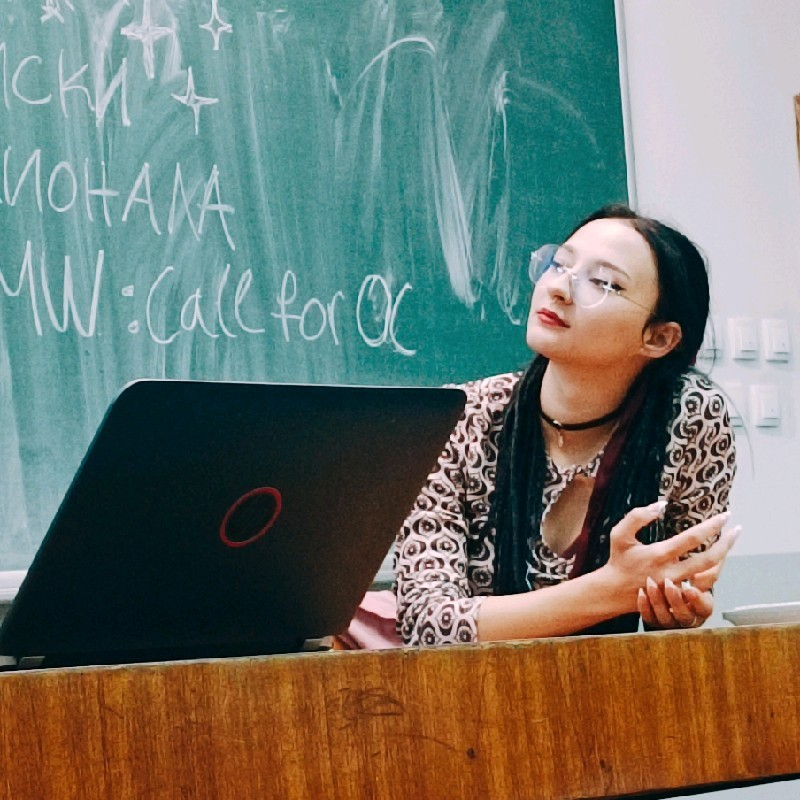

KMKRISTINA MLADENOVA
FULLSTACK · DESIGN · MARKETING · CYBERSEC
One-person studio since 2016. AI tooling across 200+ repos. Cold DMs to conference stages.
tap to play Not-flappybird
SCAN TO VISIT

KMFULLSTACK · DESIGN · MARKETING · CYBERSEC
One-person studio since 2016. AI tooling across 200+ repos. Cold DMs to conference stages.
tap to play Not-flappybird
SCAN TO VISIT
I've run my own studio since 2016, covering the full pipeline myself: graphic design and UI/UX, fullstack engineering, growth marketing, and cybersecurity to keep it all honest. I find users, talk to them directly, and build what solves their problem — on Reddit and Discord, through cold outreach, and through ads on a small budget. I also build the tools that make the follow-up work fast.
Once upon a time, in always-sunny Skopje, right after the dotcom boom, there was a little girl who saw the world in Technicolor.
I always trusted visuals more than words. Movement made sense to me in a way paragraphs never did. I kept coming back to the same thought: if a picture can replace a thousand words, what happens when the picture moves? That is how I ended up building worlds instead of describing them. The tool was code.
I have been writing it since 2012. Not as a hobby. As a compulsion. I started with HTML websites, moved into Python bots and automation, and eventually built botnets too. Not for chaos, but because I wanted to understand how networks break before I committed to making them secure. I have always been obsessed with systems, especially the moment they fail.
Pentesting. Man-in-the-middle checks. Pulling infrastructure apart just to see what is actually holding it together. I built my own studio, worked with clients directly, and built my own tools because the ones I needed simply did not exist yet. Somewhere along the way I learned something important: creativity is a system. And systems can be engineered. Beauty scales better when it is built properly.
I was raised to lead by doing. To take initiative. To build before being asked. To offer help through capability, not through noise. A CV does not show the real work: the years of building before the title existed, the standards you set for yourself when nobody is watching, the confidence that comes from debugging your own architecture long before anyone pays you for it. That is what shaped me.
In the last few years I have been building systems that ship. Systems that generate, localize, validate, and deploy. And lately I have been building the builders themselves. Logic layers that teach AI how to think inside a domain, not just respond with fluent output. And because I spent years breaking systems before building them seriously, security is not an afterthought for me. It is the baseline. Prompt injection screening. Secret detection. Compliance built in by default.
I pentest what I build, including agentic systems. I once measured the difference between a model that was properly taught and one that was not. The gap was 25.7 percentage points. The trained one stayed in scope. It pushed back when the premise was wrong. It made better decisions.
Because judgment is also a system. And systems can be designed. Now I am looking for the next world to build. A place where design meets data. Where AI supports creation instead of replacing it. Where imagination still has a compiler. At this point, you are not just hiring one engineer. You are hiring my carefully built team of AI agents, and I am the slightly overprotective systems architect who makes sure they behave.
Thank you for reading. If this resonated, we are probably building the same kind of universe.
Made with love and coffee,
— Kristina